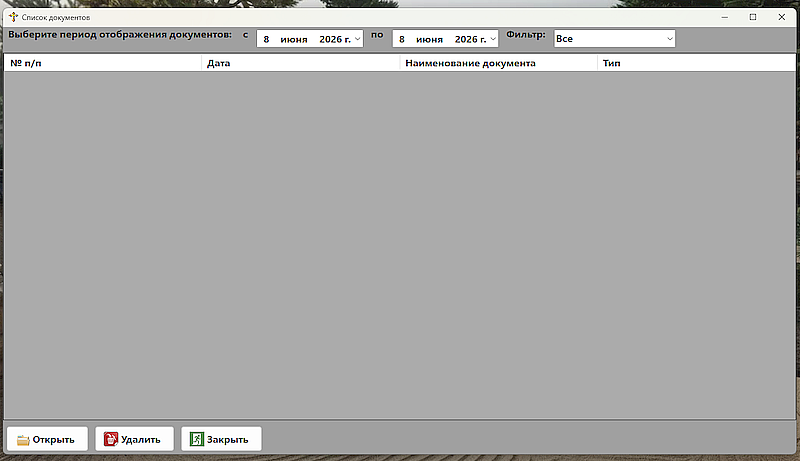
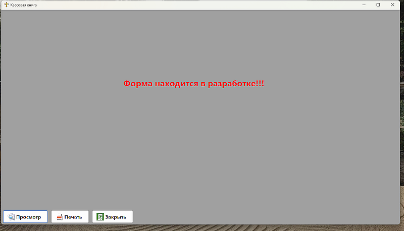
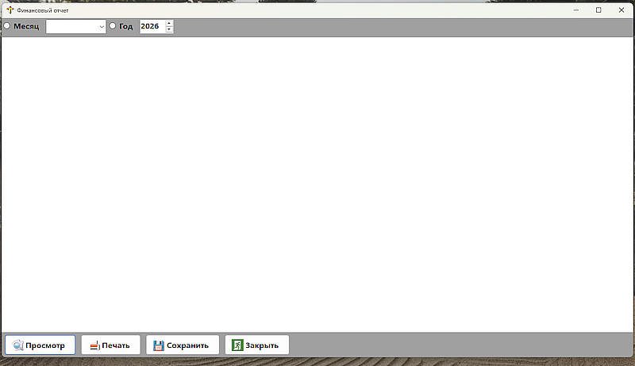
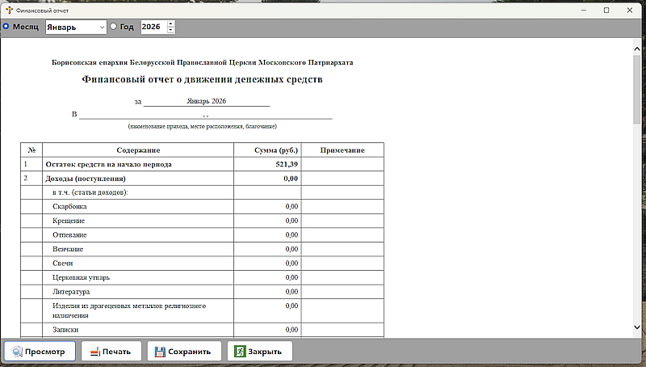
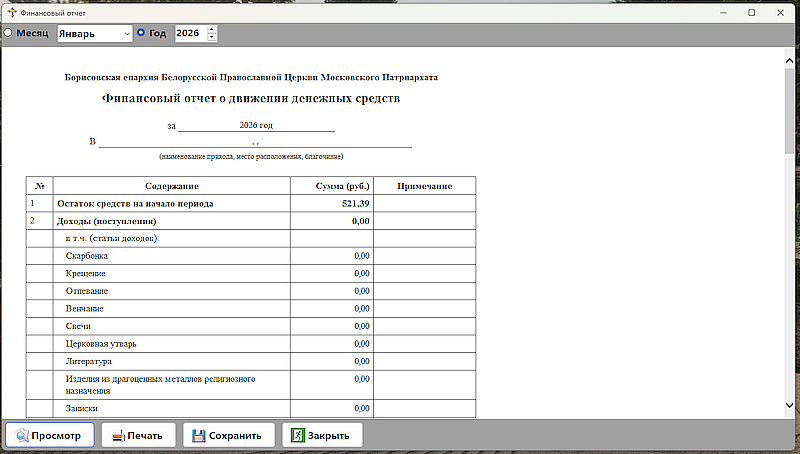

Формирование отчетов |
|
Формирование отчетовПункт меню 'Отчеты' содержит: 'Список документов' - список всех созданных в программе документов (Доходы, Расходы, ПКО, РКО). Применив определенный фильтр, расположенный на верхней панели можно просмотреть все документы, или определенной категории.  Рис. 1 - окно формы Список документов. Выбрав нужный документ, выделяем его путем нажатия на него левой кнопкой мыши, и нажимаем на кнопку 'Открыть'. В случае, если документ был создан ошибочео, воспользоваться кнопкой 'Удалить'. Кнопка 'Закрыть' - прекращает работу с данной формой и закрывает ее. 'Кассовая книга' - документ, который отображает все кассовые операции (приходные и расходные) - в данной версии пока не реализовано (планируется и впоследствие в справке будет дополнена информация), отображение и работа кассовой книги.  Рис. 2 - окно формы Кассовая книга. 'Финансовый отчет' - отчет движения денежных средств за месяц (указывается какой), или год. Выбор отображения отчета производится посредством верхней панели, либо выбор месяц и в ниспадающем списке выбрать наименование месяца, либо год (указывается какой). Включает в себя: остатки на начало заданного периода (как правило начало года или с того момента, когда начаи пользоваться программой), суммарный доход за месяц или год, суммарный расход за месяц или год, остатки на конец периода (месяц, год).  Рис. 3 - окно формы Финансовый отчет.  Рис. 4 - окно формы Финансовый отчет за месяц.  Рис. 5 - окно формы Финансовый отчет за год. | |
По вопросам: viruss954@gmail.com